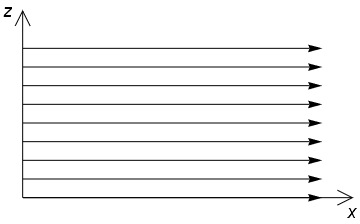
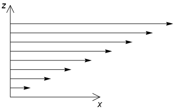
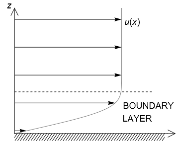

3.6. Shear stress and viscosity¶
In this section:
What does the viscosity of a fluid measure?
How is viscosity related to shear stress?
Can we ever safely ignore shear-stress effects?
Do the famous Navier-Stokes equations apply to all fluids?
3.6.1. The inviscid case¶
At the end of the last section we saw that if there is no shear stress within the fluid then we obtain the following equation:
This circumstance would occur within a body of fluid that is moving uniformly, as shown in the flow profile below. Each fluid element moves in perfect lockstep with its neighbours and so no shear force is exerted.

{kind=link}
However, in most real scenarios we do not encounter fluids moving uniformly and so adjacent fluid elements exert shear stresses on their neighbours. Consider, for example, the below profile in which the upper layers of fluid flow faster. Each layer then exerts a resistive force on the one above it, due to internal “friction”.
{kind=link}
For non-uniform motion, the assumption of no shear stress implies that layers of fluid can slip smoothly past each other without experiencing any internal fluid resistance. It also implies that the fluid would slip past a solid boundary without any transfer of momentum.
This assumption is unphysical. However, it may be a good approximation for fluids that are not very viscous if the fluid region that we are interested in is not close to a solid boundary. For a description of viscosity, see The Newtonian case.
Superfluids
All fluids have some internal resistance (viscosity) except for an exotic class of fluids called superfluids. Liquid helium is a superfluid at temperatures close to absolute zero. Research has also been undertaken at UCL to demonstrate superfluid properties of structures involving polariton quasi-particles, which result from interaction between light (photons) and matter (excitons).
3.6.2. The Newtonian case¶
The amount of internal friction depends on properties of the fluid. In a so-called “Newtonian” fluid the shear stress is linearly proportional to the velocity gradient, which may be written as
The figure below illustrates a flow profile with a nonlinear shear velocity gradient \(\displaystyle \frac{\partial u}{\partial z}\). We will see later on that this type of flow profile tends to arise near to a solid boundary, due to fluid particles “sticking” to the boundary.

{kind=link}
The constant of proportionality \(\mu\) appearing in the formula above is called the viscosity (or “dynamic viscosity”), measured in \(\mathrm{Pa.s}\) (Pascal-seconds). It measures the tendency for fluid layers to be dragged by their neighbours and can therefore be thought of as a measure of the “diffusivity of momentum”. It is a material property of the fluid under particular conditions, such as temperature. A list of viscosities of common fluids, and some not-so-common, can be found at: https://en.wikipedia.org/wiki/List_of_viscosities
Understanding viscosity
Viscosity is a measure of a fluid’s thickness, or how easily it flows. Elements in more viscous fluids exert greater internal resistance during fluid motion. Honey, for example, has a much higher viscosity than water so it flows slowly when you try to pour it.
A more accurate way to understand and measure viscosity is to consider an object such as a marble dropped into a cylinder of the fluid under gravity. In a low viscosity fluid the marble will reach the bottom of the fluid cylinder quickly, as its momentum is not substantially diffused by the fluid, whilst in a high viscosity fluid the marble will take a long time to reach the bottom as its momentum is diffused to surrounding layers of fluid.
3.6.3. The non-Newtonian case¶
The Newtonian fluid relationship (3.52) is an experimental result. It holds under a wide range of conditions for a wide range of fluids, including air, water and most oils and syrups. However, it does not hold for all fluids under all conditions. In fact, due to the abundance of long-chain polymers in biological fluids, Newtonian behaviour may be the exception in biological contexts, rather than the rule.
3.6.3.1. Nonlinear response to shear¶
In real fluids there may be a nonlinear relationship between the shear stress and the velocity gradient. This may also be interpreted as an increase/decrease in the effective viscosity under application of shear. Examples of shear-thinning fluids include paint, whipped cream, blood, saliva, lava and toothpaste. Examples of shear-thickening fluid include oobleck (which is a mixture of cornstarch and water) and the synovial fluid that lubricates our joints. Some fluids exhibit these properties only above/below a certain shear threshold.
Fun demonstrations:
3.6.3.2. Viscoelasticity¶
Some fluids become elastic when they are compressed or stretched, in the manner of an elastic solid. For these fluids, the application of a strain results in a stress in the same direction. Such fluids are called viscoelastic fluids. Examples include polyelectrolytes in which the electrostatic forces resist a change of shape, and liquid polymers in which the tangled polymers act as springs.
The relationship between stress and strain is generally Hookean (i.e. linear) and so the equations of motion can be modified adding a stress term that is proportional to the strain.
Fun demonstrations: